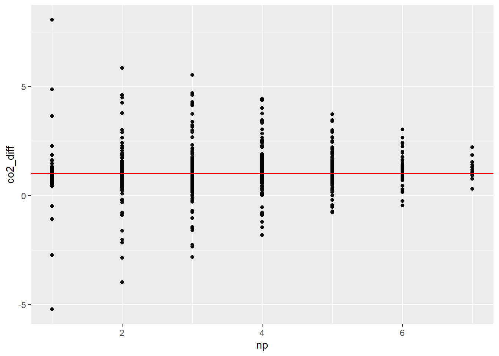
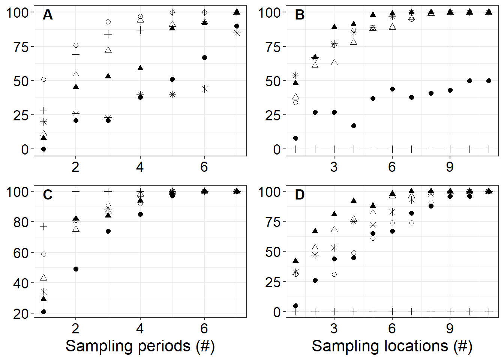

Chapter 12 Alternative sampling scheme simulations
summary_pathways <-
all_fluxes_pathways %>%
select(site, date, pathway, gas, flux_mean_g_m2_day, flux_2.5_g_m2_day, flux_97.5_g_m2_day) %>%
mutate(flux_round = round(flux_mean_g_m2_day, digits = 4), flux_round_2.5 = round(flux_2.5_g_m2_day, digits = 4), flux_round_97.5 = round(flux_97.5_g_m2_day, digits = 4)) %>%
select(-flux_mean_g_m2_day, -flux_2.5_g_m2_day, -flux_97.5_g_m2_day) %>%
pivot_wider(names_from = c(pathway, gas), values_from = c(flux_round, flux_round_2.5, flux_round_97.5))
alt_sim_space <- function(data, times, locations){
temp <- data %>%
st_drop_geometry() %>%
filter(location %in% locations) %>%
mutate(period = as.character(trip)) %>%
left_join(times, by = "period") %>%
select(location, period, flux_ch4_g_hr, flux_co2_g_hr, avg_time) %>%
mutate(flux_ch4_g_m2 = flux_ch4_g_hr * avg_time, flux_co2_g_m2 = flux_co2_g_hr * avg_time) %>%
group_by(location) %>%
summarize(flux_ch4_g_m2_day = sum(flux_ch4_g_m2), flux_co2_g_m2_day = sum(flux_co2_g_m2)) %>%
ungroup() %>%
summarize(flux_ch4_g_m2_day = mean(flux_ch4_g_m2_day), flux_co2_g_m2_day = mean(flux_co2_g_m2_day)) %>%
rename("alt_space_diffusion_co2" = "flux_co2_g_m2_day", "alt_space_diffusion_ch4" = "flux_ch4_g_m2_day")
return(temp)
}
# how off you would be if you sampled in the middle but did sample at many times
middle_sims <- list(
alt_sim_space(deans_pts_16, deans_16_time, "D3B") %>% mutate(site = "Deans", date = "08/16/22"),
alt_sim_space(deans_pts_30, deans_30_time, "D3B") %>% mutate(site = "Deans", date = "08/30/22"),
alt_sim_space(catfish_pts_06, catfish_06_time, "C2D") %>% mutate(site = "Catfish", date = "09/06/22"),
alt_sim_space(catfish_pts_18, catfish_18_time, "C2D") %>% mutate(site = "Catfish", date = "09/18/22"),
alt_sim_space(pick_pts_13, pick_13_time, "P3E") %>% mutate(site = "Pick", date = "09/13/22"),
alt_sim_space(sister3_pts_22, sister3_22_time, "S2C") %>% mutate(site = "Sister3", date = "08/22/22")
)
# how off you would be if you sampled everywhere but only at 10 AM
alt_sim_time <- function(data, trips){
data %>%
st_drop_geometry() %>%
filter(trip %in% trips) %>%
mutate(period = as.character(trip)) %>%
select(period, flux_ch4_g_hr, flux_co2_g_hr) %>%
mutate(flux_ch4_g_m2 = flux_ch4_g_hr * 24, flux_co2_g_m2 = flux_co2_g_hr * 24) %>%
summarize(flux_ch4_g_m2_day = mean(flux_ch4_g_m2), flux_co2_g_m2_day = mean(flux_co2_g_m2)) %>%
rename("alt_time_diffusion_co2" = "flux_co2_g_m2_day", "alt_time_diffusion_ch4" = "flux_ch4_g_m2_day")
}
time_sims <- list(
alt_sim_time(deans_pts_16, "1") %>% mutate(site = "Deans", date = "08/16/22"),
alt_sim_time(deans_pts_30, "1") %>% mutate(site = "Deans", date = "08/30/22"),
alt_sim_time(catfish_pts_06, "1") %>% mutate(site = "Catfish", date = "09/06/22"),
alt_sim_time(catfish_pts_18, "1") %>% mutate(site = "Catfish", date = "09/18/22"),
alt_sim_time(pick_pts_13, "1") %>% mutate(site = "Pick", date = "09/13/22"),
alt_sim_time(sister3_pts_22, "1") %>% mutate(site = "Sister3", date = "08/22/22")
)
alt_sims <- bind_rows(middle_sims) %>% left_join(summary_pathways, by = c("site", "date")) %>% left_join(bind_rows(time_sims), by = c("site", "date")) %>% mutate(sampling = case_when(
date == "08/16/22" ~ "Deans 16 Aug",
date == "08/30/22" ~ "Deans 30 Aug",
date == "09/06/22" ~ "Catfish 06 Sept",
date == "09/18/22" ~ "Catfish 18 Sept",
date == "09/13/22" ~ "Blue Herron 13 Sept",
date == "08/22/22" ~ "Sister 22 Aug",
))
ggplot(alt_sims, aes(sampling, flux_round_diffusion_CO2)) +
geom_point(size = 2) +
geom_errorbar(aes(ymin = flux_round_2.5_diffusion_CO2, ymax = flux_round_97.5_diffusion_CO2)) +
geom_point(aes(y = alt_space_diffusion_co2), size = 2, shape = 2, stroke = 1 , color = "red") +
geom_point(aes(y = alt_time_diffusion_co2), size = 2, shape = 8, stroke = 1, color = "blue")+
coord_flip()
ggplot(alt_sims %>% filter(site != "Pick"), aes(sampling, flux_round_diffusion_CH4)) +
geom_point(size = 2) +
geom_errorbar(aes(ymin = flux_round_2.5_diffusion_CH4, ymax = flux_round_97.5_diffusion_CH4)) +
geom_point(aes(y = alt_space_diffusion_ch4), size = 2, shape = 2, stroke = 1 , color = "red") +
geom_point(aes(y = alt_time_diffusion_ch4), size = 2, shape = 8, stroke = 1, color = "blue")+
coord_flip()
# this analysis is sort of showing two things, effect of kriging procedure and sampling intensity
time_period_sim <- data.frame()
samplings <- list(deans_pts_16, deans_pts_30, catfish_pts_06, catfish_pts_18, pick_pts_13, sister3_pts_22)
site_vec <- c("Deans", "Deans", "Catfish", "Catfish", "Pick", "Sister")
date_vec <- c("16 Aug", "30 Aug", "06 Sept", "18 Sept", "13 Sept", "22 Aug")
for(j in 1:length(samplings)){
for(i in 1:7){
for(f in 1:100){
tp <- sample(1:8,i,replace = FALSE)
temp <- alt_sim_time(samplings[j][[1]], tp) %>% mutate(site = site_vec[j], date = date_vec[j], np = length(tp))
time_period_sim <- bind_rows(time_period_sim, temp)
}
}
}
time_period_sim %>% left_join(summary_pathways %>% mutate(date = case_when(
date == "09/06/22" ~ "06 Sept",
date == "09/18/22" ~ "18 Sept",
date == "08/16/22" ~ "16 Aug",
date == "08/30/22" ~ "30 Aug",
date == "09/13/22" ~ "13 Sept",
date == "08/22/22" ~ "22 Aug"
), site = if_else(site == "Sister3", "Sister", site)), by = c("site","date"))## alt_time_diffusion_ch4 alt_time_diffusion_co2 site date np flux_round_diffusion_CH4
## 1 0.008806592 2.682158 Deans 16 Aug 1 0.0121
## 2 0.011988622 2.953098 Deans 16 Aug 1 0.0121
## 3 0.010813384 3.099372 Deans 16 Aug 1 0.0121
## 4 0.008806592 2.682158 Deans 16 Aug 1 0.0121
## 5 0.015853711 4.124948 Deans 16 Aug 1 0.0121
## 6 0.008806592 2.682158 Deans 16 Aug 1 0.0121
## 7 0.011988622 2.953098 Deans 16 Aug 1 0.0121
## 8 0.012894201 3.986360 Deans 16 Aug 1 0.0121
## 9 0.012894201 3.986360 Deans 16 Aug 1 0.0121
## 10 0.011988622 2.953098 Deans 16 Aug 1 0.0121
## 11 0.012894201 3.986360 Deans 16 Aug 1 0.0121
## 12 0.011350432 2.371313 Deans 16 Aug 1 0.0121
## 13 0.015853711 4.124948 Deans 16 Aug 1 0.0121
## 14 0.010813384 3.099372 Deans 16 Aug 1 0.0121
## 15 0.011988622 2.953098 Deans 16 Aug 1 0.0121
## 16 0.008806592 2.682158 Deans 16 Aug 1 0.0121
## 17 0.011988622 2.953098 Deans 16 Aug 1 0.0121
## 18 0.008806592 2.682158 Deans 16 Aug 1 0.0121
## 19 0.015853711 4.124948 Deans 16 Aug 1 0.0121
## 20 0.008806592 2.682158 Deans 16 Aug 1 0.0121
## 21 0.011350432 2.371313 Deans 16 Aug 1 0.0121
## 22 0.008806592 2.682158 Deans 16 Aug 1 0.0121
## 23 0.011272003 4.024277 Deans 16 Aug 1 0.0121
## 24 0.012894201 3.986360 Deans 16 Aug 1 0.0121
## 25 0.012894201 3.986360 Deans 16 Aug 1 0.0121
## 26 0.012894201 3.986360 Deans 16 Aug 1 0.0121
## 27 0.015853711 4.124948 Deans 16 Aug 1 0.0121
## 28 0.011988622 2.953098 Deans 16 Aug 1 0.0121
## 29 0.011272003 4.024277 Deans 16 Aug 1 0.0121
## 30 0.012894201 3.986360 Deans 16 Aug 1 0.0121
## 31 0.011350432 2.371313 Deans 16 Aug 1 0.0121
## 32 0.011350432 2.371313 Deans 16 Aug 1 0.0121
## 33 0.012894201 3.986360 Deans 16 Aug 1 0.0121
## 34 0.011350432 2.371313 Deans 16 Aug 1 0.0121
## 35 0.011272003 4.024277 Deans 16 Aug 1 0.0121
## 36 0.015853711 4.124948 Deans 16 Aug 1 0.0121
## 37 0.011272003 4.024277 Deans 16 Aug 1 0.0121
## 38 0.011988622 2.953098 Deans 16 Aug 1 0.0121
## 39 0.011350432 2.371313 Deans 16 Aug 1 0.0121
## 40 0.011988622 2.953098 Deans 16 Aug 1 0.0121
## 41 0.011350432 2.371313 Deans 16 Aug 1 0.0121
## 42 0.011350432 2.371313 Deans 16 Aug 1 0.0121
## 43 0.011988622 2.953098 Deans 16 Aug 1 0.0121
## 44 0.010813384 3.099372 Deans 16 Aug 1 0.0121
## 45 0.010813384 3.099372 Deans 16 Aug 1 0.0121
## 46 0.011988622 2.953098 Deans 16 Aug 1 0.0121
## 47 0.015853711 4.124948 Deans 16 Aug 1 0.0121
## 48 0.011988622 2.953098 Deans 16 Aug 1 0.0121
## 49 0.010627335 2.150134 Deans 16 Aug 1 0.0121
## 50 0.012894201 3.986360 Deans 16 Aug 1 0.0121
## 51 0.015853711 4.124948 Deans 16 Aug 1 0.0121
## 52 0.008806592 2.682158 Deans 16 Aug 1 0.0121
## 53 0.011272003 4.024277 Deans 16 Aug 1 0.0121
## 54 0.010627335 2.150134 Deans 16 Aug 1 0.0121
## 55 0.011350432 2.371313 Deans 16 Aug 1 0.0121
## 56 0.011272003 4.024277 Deans 16 Aug 1 0.0121
## 57 0.010813384 3.099372 Deans 16 Aug 1 0.0121
## 58 0.010627335 2.150134 Deans 16 Aug 1 0.0121
## 59 0.011988622 2.953098 Deans 16 Aug 1 0.0121
## 60 0.011988622 2.953098 Deans 16 Aug 1 0.0121
## 61 0.015853711 4.124948 Deans 16 Aug 1 0.0121
## 62 0.011350432 2.371313 Deans 16 Aug 1 0.0121
## 63 0.012894201 3.986360 Deans 16 Aug 1 0.0121
## 64 0.011988622 2.953098 Deans 16 Aug 1 0.0121
## 65 0.010813384 3.099372 Deans 16 Aug 1 0.0121
## 66 0.012894201 3.986360 Deans 16 Aug 1 0.0121
## 67 0.010627335 2.150134 Deans 16 Aug 1 0.0121
## 68 0.012894201 3.986360 Deans 16 Aug 1 0.0121
## 69 0.012894201 3.986360 Deans 16 Aug 1 0.0121
## 70 0.015853711 4.124948 Deans 16 Aug 1 0.0121
## 71 0.011988622 2.953098 Deans 16 Aug 1 0.0121
## flux_round_diffusion_CO2 flux_round_ebullition_CH4 flux_round_2.5_diffusion_CH4
## 1 3.22 0.0232 0.009
## 2 3.22 0.0232 0.009
## 3 3.22 0.0232 0.009
## 4 3.22 0.0232 0.009
## 5 3.22 0.0232 0.009
## 6 3.22 0.0232 0.009
## 7 3.22 0.0232 0.009
## 8 3.22 0.0232 0.009
## 9 3.22 0.0232 0.009
## 10 3.22 0.0232 0.009
## 11 3.22 0.0232 0.009
## 12 3.22 0.0232 0.009
## 13 3.22 0.0232 0.009
## 14 3.22 0.0232 0.009
## 15 3.22 0.0232 0.009
## 16 3.22 0.0232 0.009
## 17 3.22 0.0232 0.009
## 18 3.22 0.0232 0.009
## 19 3.22 0.0232 0.009
## 20 3.22 0.0232 0.009
## 21 3.22 0.0232 0.009
## 22 3.22 0.0232 0.009
## 23 3.22 0.0232 0.009
## 24 3.22 0.0232 0.009
## 25 3.22 0.0232 0.009
## 26 3.22 0.0232 0.009
## 27 3.22 0.0232 0.009
## 28 3.22 0.0232 0.009
## 29 3.22 0.0232 0.009
## 30 3.22 0.0232 0.009
## 31 3.22 0.0232 0.009
## 32 3.22 0.0232 0.009
## 33 3.22 0.0232 0.009
## 34 3.22 0.0232 0.009
## 35 3.22 0.0232 0.009
## 36 3.22 0.0232 0.009
## 37 3.22 0.0232 0.009
## 38 3.22 0.0232 0.009
## 39 3.22 0.0232 0.009
## 40 3.22 0.0232 0.009
## 41 3.22 0.0232 0.009
## 42 3.22 0.0232 0.009
## 43 3.22 0.0232 0.009
## 44 3.22 0.0232 0.009
## 45 3.22 0.0232 0.009
## 46 3.22 0.0232 0.009
## 47 3.22 0.0232 0.009
## 48 3.22 0.0232 0.009
## 49 3.22 0.0232 0.009
## 50 3.22 0.0232 0.009
## 51 3.22 0.0232 0.009
## 52 3.22 0.0232 0.009
## 53 3.22 0.0232 0.009
## 54 3.22 0.0232 0.009
## 55 3.22 0.0232 0.009
## 56 3.22 0.0232 0.009
## 57 3.22 0.0232 0.009
## 58 3.22 0.0232 0.009
## 59 3.22 0.0232 0.009
## 60 3.22 0.0232 0.009
## 61 3.22 0.0232 0.009
## 62 3.22 0.0232 0.009
## 63 3.22 0.0232 0.009
## 64 3.22 0.0232 0.009
## 65 3.22 0.0232 0.009
## 66 3.22 0.0232 0.009
## 67 3.22 0.0232 0.009
## 68 3.22 0.0232 0.009
## 69 3.22 0.0232 0.009
## 70 3.22 0.0232 0.009
## 71 3.22 0.0232 0.009
## flux_round_2.5_diffusion_CO2 flux_round_2.5_ebullition_CH4 flux_round_97.5_diffusion_CH4
## 1 2.757 0.0065 0.0151
## 2 2.757 0.0065 0.0151
## 3 2.757 0.0065 0.0151
## 4 2.757 0.0065 0.0151
## 5 2.757 0.0065 0.0151
## 6 2.757 0.0065 0.0151
## 7 2.757 0.0065 0.0151
## 8 2.757 0.0065 0.0151
## 9 2.757 0.0065 0.0151
## 10 2.757 0.0065 0.0151
## 11 2.757 0.0065 0.0151
## 12 2.757 0.0065 0.0151
## 13 2.757 0.0065 0.0151
## 14 2.757 0.0065 0.0151
## 15 2.757 0.0065 0.0151
## 16 2.757 0.0065 0.0151
## 17 2.757 0.0065 0.0151
## 18 2.757 0.0065 0.0151
## 19 2.757 0.0065 0.0151
## 20 2.757 0.0065 0.0151
## 21 2.757 0.0065 0.0151
## 22 2.757 0.0065 0.0151
## 23 2.757 0.0065 0.0151
## 24 2.757 0.0065 0.0151
## 25 2.757 0.0065 0.0151
## 26 2.757 0.0065 0.0151
## 27 2.757 0.0065 0.0151
## 28 2.757 0.0065 0.0151
## 29 2.757 0.0065 0.0151
## 30 2.757 0.0065 0.0151
## 31 2.757 0.0065 0.0151
## 32 2.757 0.0065 0.0151
## 33 2.757 0.0065 0.0151
## 34 2.757 0.0065 0.0151
## 35 2.757 0.0065 0.0151
## 36 2.757 0.0065 0.0151
## 37 2.757 0.0065 0.0151
## 38 2.757 0.0065 0.0151
## 39 2.757 0.0065 0.0151
## 40 2.757 0.0065 0.0151
## 41 2.757 0.0065 0.0151
## 42 2.757 0.0065 0.0151
## 43 2.757 0.0065 0.0151
## 44 2.757 0.0065 0.0151
## 45 2.757 0.0065 0.0151
## 46 2.757 0.0065 0.0151
## 47 2.757 0.0065 0.0151
## 48 2.757 0.0065 0.0151
## 49 2.757 0.0065 0.0151
## 50 2.757 0.0065 0.0151
## 51 2.757 0.0065 0.0151
## 52 2.757 0.0065 0.0151
## 53 2.757 0.0065 0.0151
## 54 2.757 0.0065 0.0151
## 55 2.757 0.0065 0.0151
## 56 2.757 0.0065 0.0151
## 57 2.757 0.0065 0.0151
## 58 2.757 0.0065 0.0151
## 59 2.757 0.0065 0.0151
## 60 2.757 0.0065 0.0151
## 61 2.757 0.0065 0.0151
## 62 2.757 0.0065 0.0151
## 63 2.757 0.0065 0.0151
## 64 2.757 0.0065 0.0151
## 65 2.757 0.0065 0.0151
## 66 2.757 0.0065 0.0151
## 67 2.757 0.0065 0.0151
## 68 2.757 0.0065 0.0151
## 69 2.757 0.0065 0.0151
## 70 2.757 0.0065 0.0151
## 71 2.757 0.0065 0.0151
## flux_round_97.5_diffusion_CO2 flux_round_97.5_ebullition_CH4
## 1 3.7506 0.0484
## 2 3.7506 0.0484
## 3 3.7506 0.0484
## 4 3.7506 0.0484
## 5 3.7506 0.0484
## 6 3.7506 0.0484
## 7 3.7506 0.0484
## 8 3.7506 0.0484
## 9 3.7506 0.0484
## 10 3.7506 0.0484
## 11 3.7506 0.0484
## 12 3.7506 0.0484
## 13 3.7506 0.0484
## 14 3.7506 0.0484
## 15 3.7506 0.0484
## 16 3.7506 0.0484
## 17 3.7506 0.0484
## 18 3.7506 0.0484
## 19 3.7506 0.0484
## 20 3.7506 0.0484
## 21 3.7506 0.0484
## 22 3.7506 0.0484
## 23 3.7506 0.0484
## 24 3.7506 0.0484
## 25 3.7506 0.0484
## 26 3.7506 0.0484
## 27 3.7506 0.0484
## 28 3.7506 0.0484
## 29 3.7506 0.0484
## 30 3.7506 0.0484
## 31 3.7506 0.0484
## 32 3.7506 0.0484
## 33 3.7506 0.0484
## 34 3.7506 0.0484
## 35 3.7506 0.0484
## 36 3.7506 0.0484
## 37 3.7506 0.0484
## 38 3.7506 0.0484
## 39 3.7506 0.0484
## 40 3.7506 0.0484
## 41 3.7506 0.0484
## 42 3.7506 0.0484
## 43 3.7506 0.0484
## 44 3.7506 0.0484
## 45 3.7506 0.0484
## 46 3.7506 0.0484
## 47 3.7506 0.0484
## 48 3.7506 0.0484
## 49 3.7506 0.0484
## 50 3.7506 0.0484
## 51 3.7506 0.0484
## 52 3.7506 0.0484
## 53 3.7506 0.0484
## 54 3.7506 0.0484
## 55 3.7506 0.0484
## 56 3.7506 0.0484
## 57 3.7506 0.0484
## 58 3.7506 0.0484
## 59 3.7506 0.0484
## 60 3.7506 0.0484
## 61 3.7506 0.0484
## 62 3.7506 0.0484
## 63 3.7506 0.0484
## 64 3.7506 0.0484
## 65 3.7506 0.0484
## 66 3.7506 0.0484
## 67 3.7506 0.0484
## 68 3.7506 0.0484
## 69 3.7506 0.0484
## 70 3.7506 0.0484
## 71 3.7506 0.0484
## [ reached 'max' / getOption("max.print") -- omitted 4129 rows ]time_period_sim_calc <- time_period_sim %>%
left_join(summary_pathways %>% mutate(date = case_when(
date == "09/06/22" ~ "06 Sept",
date == "09/18/22" ~ "18 Sept",
date == "08/16/22" ~ "16 Aug",
date == "08/30/22" ~ "30 Aug",
date == "09/13/22" ~ "13 Sept",
date == "08/22/22" ~ "22 Aug"
), site = if_else(site == "Sister3", "Sister", site)), by = c("site","date"))%>%
mutate(ch4_accurate_20perc = if_else(alt_time_diffusion_ch4 > (flux_round_diffusion_CH4 * 0.8) & alt_time_diffusion_ch4 < (flux_round_diffusion_CH4 *1.2), TRUE, FALSE),
ch4_accurate_95ci = if_else(alt_time_diffusion_ch4 > flux_round_2.5_diffusion_CH4 & alt_time_diffusion_ch4 < flux_round_97.5_diffusion_CH4, TRUE, FALSE),
co2_accurate_20perc = if_else(abs(alt_time_diffusion_co2) > abs(flux_round_diffusion_CO2 * 0.8) & abs(alt_time_diffusion_co2) < abs(flux_round_diffusion_CO2 *1.2), TRUE, FALSE),
co2_accurate_95ci = if_else(alt_time_diffusion_co2 > flux_round_2.5_diffusion_CO2 & alt_time_diffusion_co2 < flux_round_97.5_diffusion_CO2, TRUE, FALSE),
ch4_diff = alt_time_diffusion_ch4 / flux_round_diffusion_CH4,
co2_diff = alt_time_diffusion_co2/ flux_round_diffusion_CO2
)
time_period_summ <- time_period_sim_calc %>% group_by(date, np) %>% summarize(accuracy_ch4 = sum(ch4_accurate_20perc), accuracy_co2 = sum(co2_accurate_20perc), accuracy_ch4_95ci = sum(ch4_accurate_95ci), accuracy_co2_95ci = sum(co2_accurate_95ci)) %>%
mutate(sampling = case_when(
date == "06 Sept" ~ "Catfish \n06 Sept\n",
date == "18 Sept" ~ "Catfish \n18 Sept\n",
date == "16 Aug" ~ "Deans \n16 Aug\n",
date == "30 Aug" ~ "Deans \n30 Aug\n",
date == "13 Sept" ~ "Blue Herron \n13 Sept\n",
date == "22 Aug" ~ "Sister \n22 Aug"
))## `summarise()` has grouped output by 'date'. You can override using the `.groups` argument.time_co2 <- time_period_summ %>%
ggplot(aes(np, accuracy_co2_95ci, shape = sampling))+
geom_point(size = 2)+
scale_shape_manual(values = c(16, 24, 21, 3, 17, 8))+
theme_bw()+
labs(x= "Sampling periods (#)", y = "Simulations within 95% CI (%)")+
theme(legend.text.align = 0, legend.title = element_blank(), axis.text = element_text(size = 14, color = "black"), axis.title = element_text(size = 16, color = "black"), legend.text = element_text(size = 14))
time_ch4 <- time_period_summ %>%
ggplot(aes(np, accuracy_ch4_95ci, shape = sampling))+
geom_point(size = 2)+
scale_shape_manual(values = c(16, 24, 21, 3, 17, 8))+
theme_bw()+
labs(x= "Sampling periods (#)", y = "Simulations within 95% CI (%)")+
theme(legend.text.align = 0, legend.title = element_blank(), axis.text = element_text(size = 14, color = "black"), axis.title = element_text(size = 16, color = "black"), legend.text = element_text(size = 14))
time_period_sim_calc %>% ggplot(aes(np, co2_diff))+geom_point() + geom_hline(yintercept = 1, color = "red")
space_sim <- data.frame()
samplings <- list(deans_pts_16, deans_pts_30, catfish_pts_06, catfish_pts_18, pick_pts_13, sister3_pts_22)
time_vec <- list(deans_16_time, deans_30_time, catfish_06_time, catfish_18_time, pick_13_time, sister3_22_time)
site_vec <- c("Deans", "Deans", "Catfish", "Catfish", "Pick", "Sister")
date_vec <- c("16 Aug", "30 Aug", "06 Sept", "18 Sept", "13 Sept", "22 Aug")
for(j in 1:length(samplings)){
location_vec <- unique(samplings[j][[1]]$location)
for(i in 1:(length(location_vec)-1)){
for(f in 1:100){
tp <- sample(location_vec,i,replace = FALSE)
temp <- alt_sim_space(samplings[j][[1]], time_vec[j][[1]], tp) %>% mutate(site = site_vec[j], date = date_vec[j], tp = length(tp))
space_sim <- bind_rows(space_sim, temp)
}
}
}
space_sim_calc <- space_sim %>%
left_join(summary_pathways %>% mutate(date = case_when(
date == "09/06/22" ~ "06 Sept",
date == "09/18/22" ~ "18 Sept",
date == "08/16/22" ~ "16 Aug",
date == "08/30/22" ~ "30 Aug",
date == "09/13/22" ~ "13 Sept",
date == "08/22/22" ~ "22 Aug"
), site = if_else(site == "Sister3", "Sister", site)), by = c("site","date"))%>%
mutate(ch4_accurate_20perc = if_else(abs(alt_space_diffusion_ch4) > abs(flux_round_diffusion_CH4 * 0.8) & abs(alt_space_diffusion_ch4) < abs(flux_round_diffusion_CH4 *1.2), TRUE, FALSE),
ch4_accurate_95ci = if_else(alt_space_diffusion_ch4 > flux_round_2.5_diffusion_CH4 & alt_space_diffusion_ch4 < flux_round_97.5_diffusion_CH4, TRUE, FALSE),
co2_accurate_20perc = if_else(abs(alt_space_diffusion_co2) > abs(flux_round_diffusion_CO2 * 0.8) & abs(alt_space_diffusion_co2) < abs(flux_round_diffusion_CO2 *1.2), TRUE, FALSE),
co2_accurate_95ci = if_else(alt_space_diffusion_co2 > flux_round_2.5_diffusion_CO2 & alt_space_diffusion_co2 < flux_round_97.5_diffusion_CO2, TRUE, FALSE),
ch4_diff = alt_space_diffusion_ch4 / flux_round_diffusion_CH4,
co2_diff = alt_space_diffusion_co2/ flux_round_diffusion_CO2
)
space_summ <- space_sim_calc %>% group_by(date, tp) %>% summarize(accuracy_ch4 = sum(ch4_accurate_20perc), accuracy_co2 = sum(co2_accurate_20perc), accuracy_ch4_95ci = sum(ch4_accurate_95ci), accuracy_co2_95ci = sum(co2_accurate_95ci)) %>%
mutate(sampling = case_when(
date == "06 Sept" ~ "Catfish \n06 Sept",
date == "18 Sept" ~ "Catfish \n18 Sept",
date == "16 Aug" ~ "Deans \n16 Aug",
date == "30 Aug" ~ "Deans \n30 Aug",
date == "13 Sept" ~ "Blue Herron \n13 Sept",
date == "22 Aug" ~ "Sister \n22 Aug"
))## `summarise()` has grouped output by 'date'. You can override using the `.groups` argument.space_ch4 <- space_summ %>%
ggplot(aes(tp, accuracy_ch4_95ci, shape = sampling))+
geom_point(size = 2)+
scale_shape_manual(values = c(16, 24, 21, 3, 17, 8))+
theme_bw()+
labs(x= "Sampling locations (#)", y = "Simulations within 95% CI (%)")+
theme(legend.text.align = 0, legend.title = element_blank(), axis.text = element_text(size = 14, color = "black"), axis.title = element_text(size = 16, color = "black"), legend.text = element_text(size = 14))
space_co2 <- space_summ %>%
ggplot(aes(tp, accuracy_co2_95ci, shape = sampling))+
geom_point(size = 2)+
scale_shape_manual(values = c(16, 24, 21, 3, 17, 8))+
theme_bw()+
labs(x= "Sampling locations (#)", y = "Simulations within 95% CI (%)")+
theme(legend.text.align = 0, legend.title = element_blank(), axis.text = element_text(size = 14, color = "black"), axis.title = element_text(size = 16, color = "black"), legend.text = element_text(size = 14))title <- ggdraw() +
draw_label(
"Simulations within 95% CI (%)",
angle = 90,
size = 16
)
interior <- plot_grid(time_co2+ theme(legend.position = "none", axis.title.y = element_blank(), axis.title.x = element_blank()), space_co2+ theme(legend.position = "none", axis.title.y = element_blank(), axis.title.x = element_blank()), time_ch4+ theme(legend.position = "none", axis.title.y = element_blank()), space_ch4+ theme(legend.position = "none", axis.title.y = element_blank()), labels = "AUTO", label_x = 0.15, label_y = 0.98)
interior
png(filename = "4-Figures/consequences.png", width = 8, height = 5, units = "in", res = 300)
plot_grid(title, interior, get_legend(time_co2), ncol = 3, rel_widths = c(0.05, 0.75, 0.2))
dev.off()## png
## 2